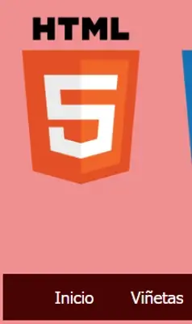
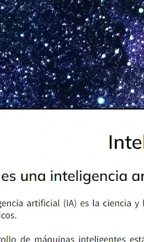
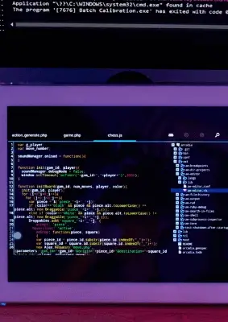

No se necesita un cohete
científico
Se necesita un Diseñador
Se necesita un Diseñador
Contenido
Una página web siempre tiene que conservar una característica principal: ser atractiva. A lo largo de este trayecto de creaciones de páginas web, he intentado agregar detalles, que aunque son pequeños, considero que pueden llegar a llamar la atención de las personas que entren a mi sitio.
Animaciones y movimiento
Las páginas web deben llevar animaciones, pero no de manera tan saturada, solamente que se vea de forma atractiva. Por ejemplo he utilizado efectos hover, marquesinas, efecto focus, y muchos más que logran dinamismo, asi como la propiedad transform en css.
Cuando las personas vean la página web y encuentren contenido educativo importante podrán ponerse en contacto con el recurso de correo electrónico del autor/autores, siempre y cuando se haya colocado el correo de contacto personal. El medio de contactarse con el autor debe ser de acceso fácil y privada.
CREA, DISEÑA Y NAVEGA
 Elementos que componen una página web
El texto es el elemento más significativo de
cualquier sitio Web porque los usuarios navegan por la Web
fundamentalmente en busca de información expresada en hipertexto.
Las imágenes constituyen un elemento esencial para
ofrecer información visual del contenido y mostrar un diseño
atractivo y personal.
El nombre de dominio es la primera parte de una
dirección Web que identifica al servidor que almacena y sirve su
sitio.
Videos, mientras Internet es cada vez más
asequible, confiable y veloz, los programas de edición de video se
hacen más cercanos a los usuarios.
Sonidos, un elemento cada vez más importante. La
comercialización de nuevos dispositivos digitales móviles como el
iPhone ha potencializado este elemento.
CREA, DISEÑA Y NAVEGA
